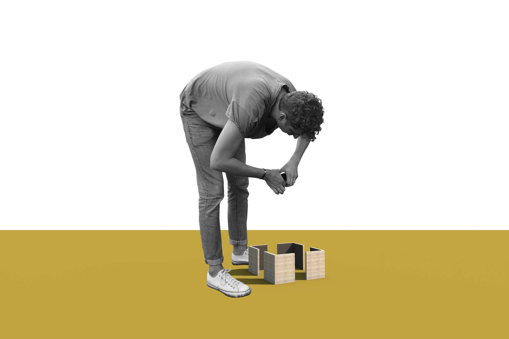
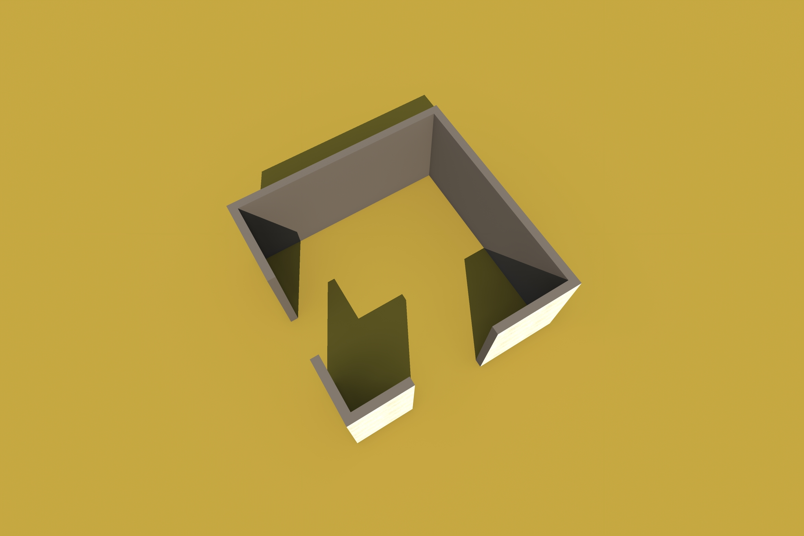
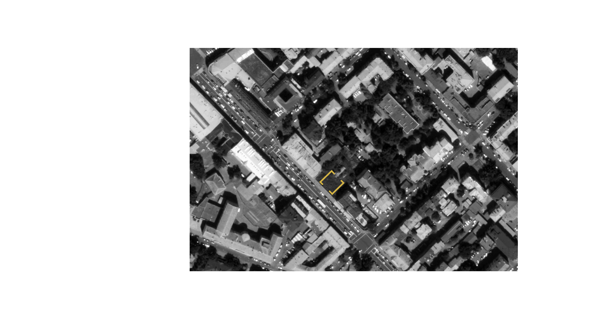
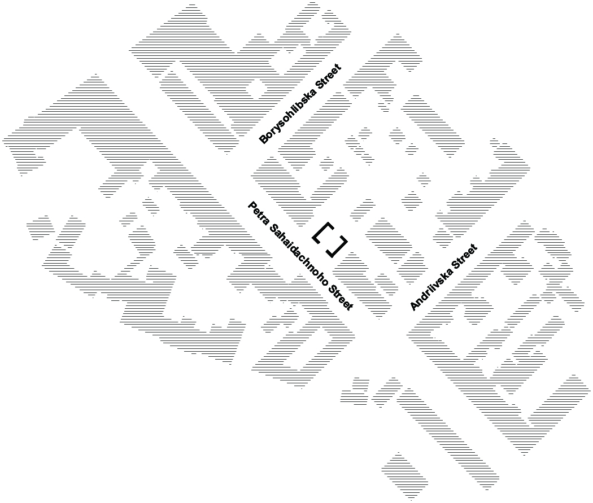
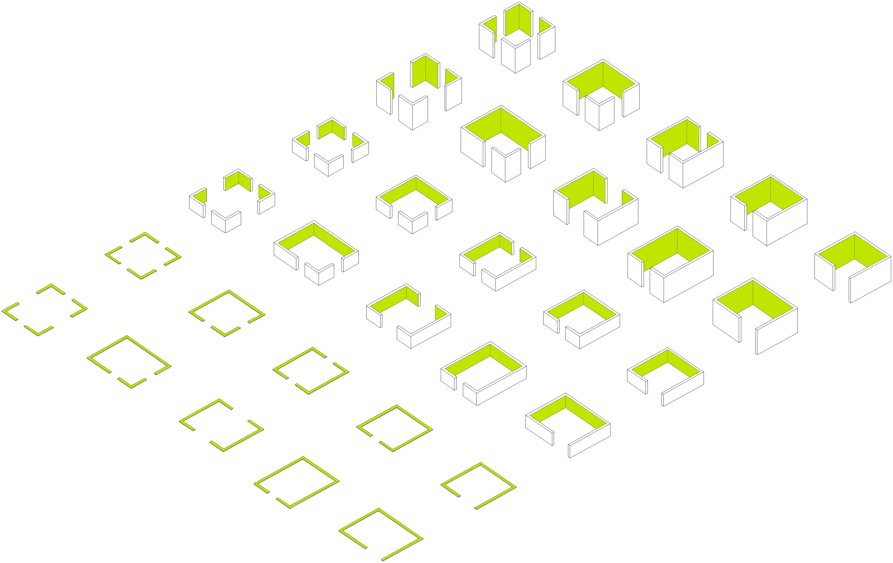
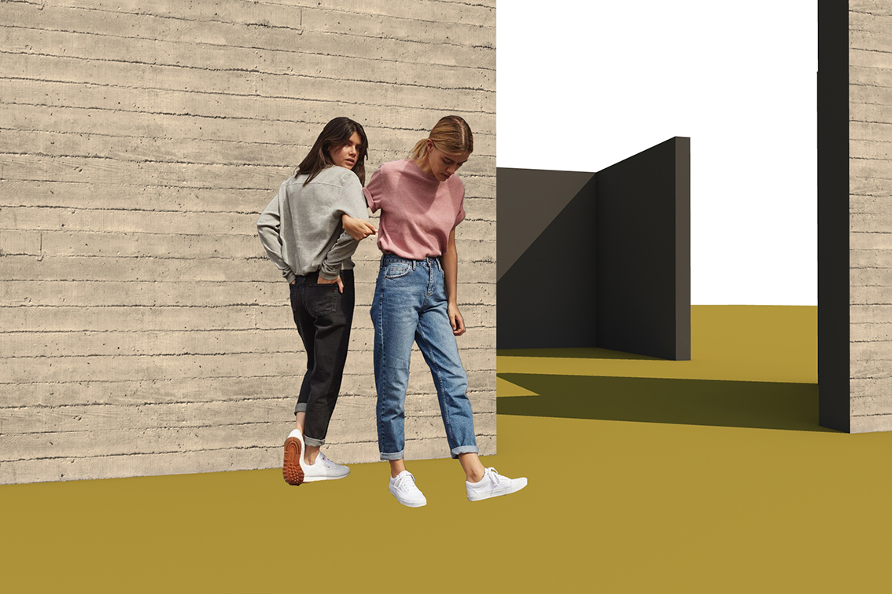
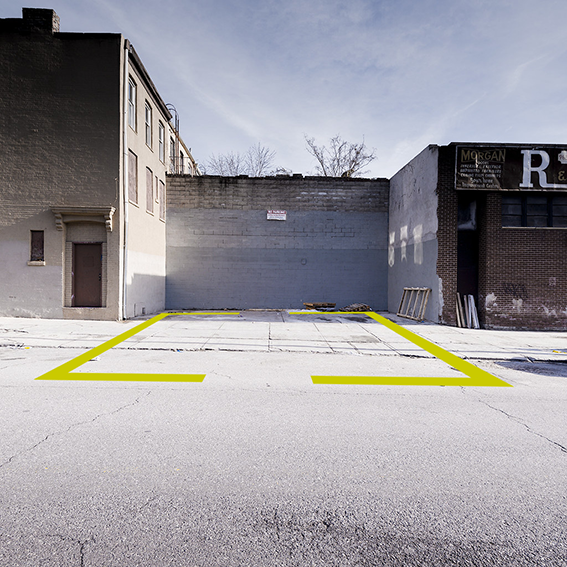
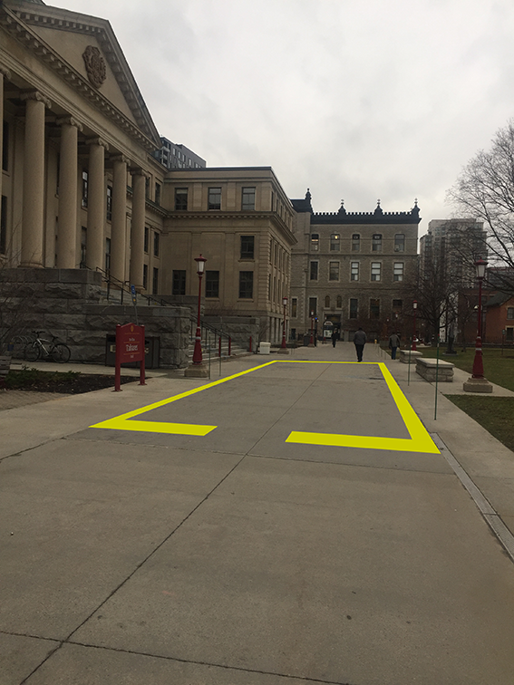
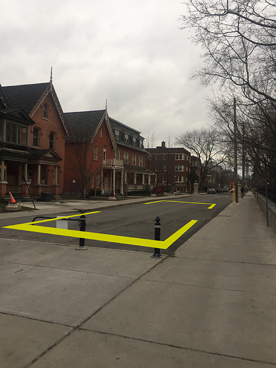
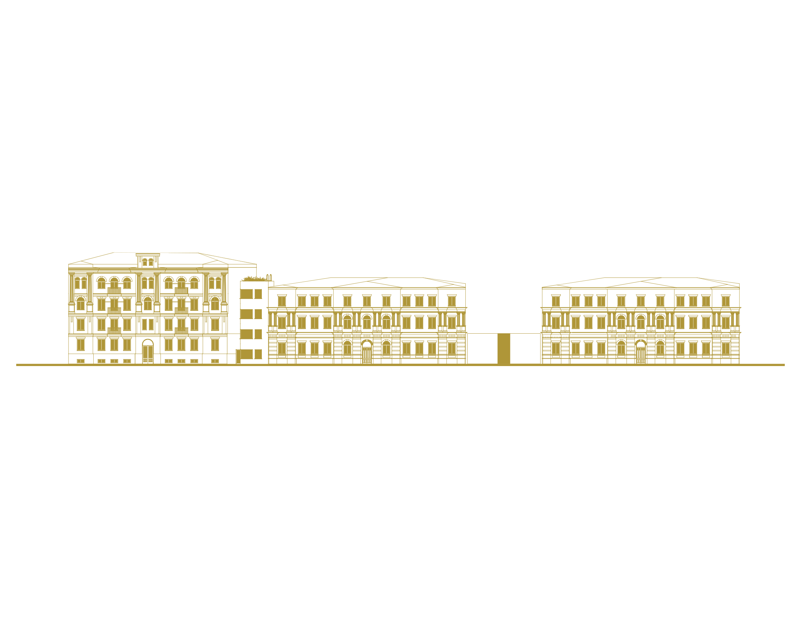

spaces in between being manifested

Spaces In Between is a conceptual architectural project of public space and installation that operates as a social and cultural catalyst. Neutral like a "dark matter" space that doesn't interact with its surroundings but has a strong influence on it. The installation has no fixed size, just proportions, and can be easily placed in any area. It can be built from recycling concrete, adapting and demonstrating sustainability practices to the public — where the void can still be preserved.
Where the void can still be preserved...
Wasteland at Petra Sahaidachnoho Street / now pedestrian
Kyiv, Ukraine
Only one from various possible locations.



Public space is a void that manifests city ownership by its citizens. It's what adds value to the urban lifestyle. Unfortunately, in rapidly growing cities, voids can be lost — and the right to city ownership along with them. In order to preserve the void, it can acquire a defined shape to manifest its existence.
spaces in [ ] brackets
[ meeting point ]
[ informal social dialogue ]
[ cultural catalyst ]
[ sub-cultural retrieve ]

free shape.
free size.
free placement.
free interpretation.
free from stereotypes.

The 2020 pandemic revealed street, city and public space injustices all over the world even more. When artists, musicians, actors and dancers could no longer perform indoors, they were left out of work or pushed into virtual space — while the physical space stayed occupied by a "non-human user": the car. City, street and public space justice means that space is shared equally and serves the user most in need. It doesn't mean redesigning everything or refusing cars — it means the streets we already have can become more resilient to the needs of actual citizens.



Ottawa, ON, Canada; an empty dead end near uOttawa. Random location.

designed & built by masha vakula